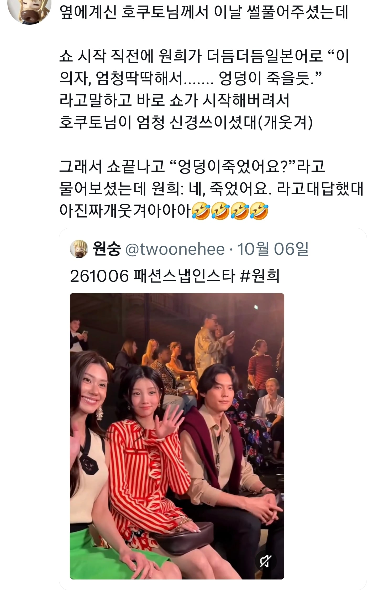
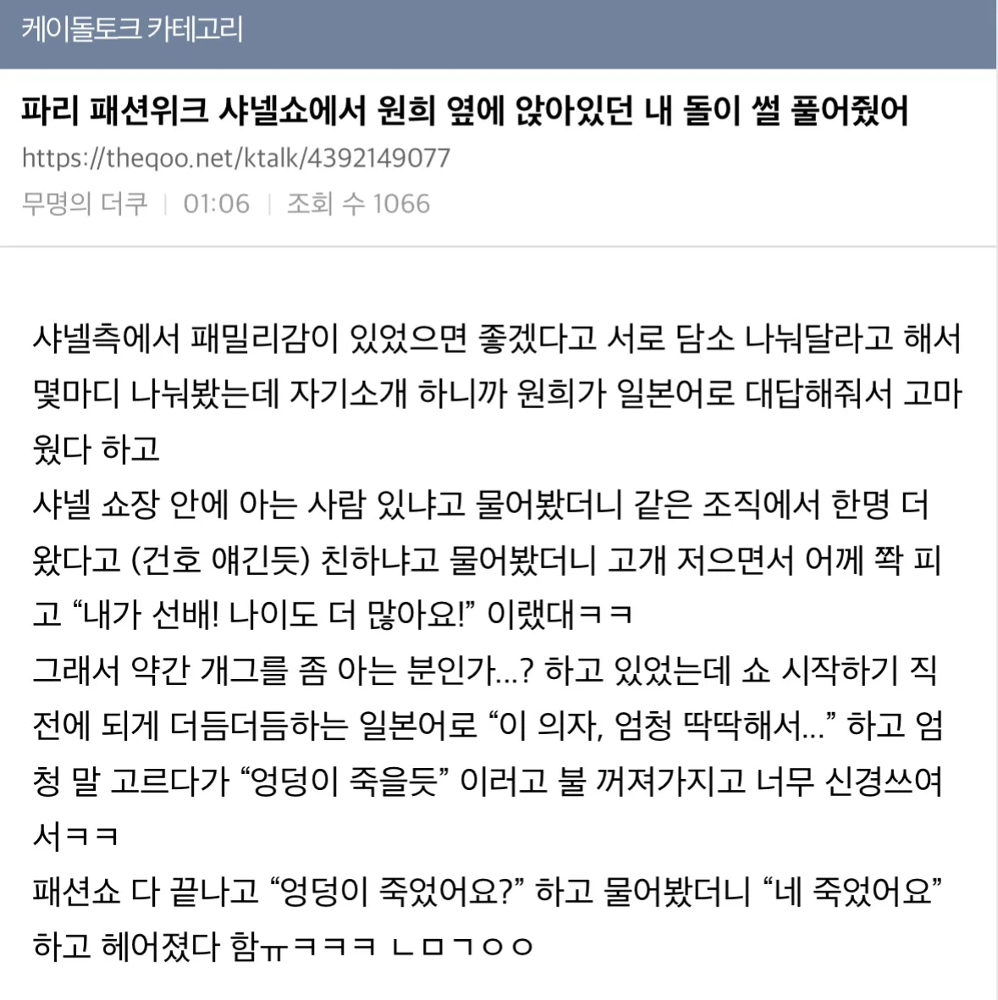

“엉덩이 죽었어요?”
“네. 죽었어요.”


“엉덩이 죽었어요?”
“네. 죽었어요.”
네 죽었어요 ㅋㅋㅋㅋ
엉덩이 기억상실 증후군을 넘어서는 엉덩이사망판결
대호감ㅋㅋ
엉덩이야 살아나라
원희 귀여워 ㅋㅋㅋㅋ
덤덤하게 풀어도 충분히 재밌는 썰인데 호들갑을 너무 떨어서 재미가 반감되네
뜬금없는데 왜 일본인과 한국인이 만나면 항상 한국인이 일본어로 얘기해주는걸까
유튭좀봐라 요즘 일본가면 일본애들이 호다닥 와서 한국말로 말건다
응 아냐 뇌피셜 자제좀
상대방을 배려할 줄 안다는건 지능이 뛰어나다는 뜻
원래 세상은 능력있는사람이 없는애 배려하면서 돌아가니까?
아는 사람이 하는거겠지
아일릿은 일본 활동 하고
저 남자는 한국활동 안하지 않나?
외국인이 우리나라 말을 할 가능성은 낮으니 그나라 말을 알면 그나라 말로 대화를 시도하는게 교양있는 지식인의 태도지.
전세계 어딜가나 자국어로 대화하는 그나라가 옳다는거냐
너는 왜 이 모양인걸까
이거 하나 물어봤다고 인신공격하는 너는 왜 그모양인걸까 ㅋㅋㅋ 레전드네
둘 중에 우연히 상대언어 가능한 사람이 있으면 배려하는거지
저 여자애는 일본에서 돈을 존나 버는데
저 남자애는 한국에서 돈을 못벌잖아
아이유 3단 고음 소화할때 놀람
원희가 들어와서 아일릿을 급하게 출시했다는 킹리적갓심이 들 정도
걍 본투비 아이돌 스타성임 ㅋㅋ
얜 걍 사람자체가 밝고 귀엽고 웃김 ㅋㅋㅋㅋ
원희가 진짜 예능감이나 사교성이나 전부 엄청 좋더라 ㅋㅋㅋ